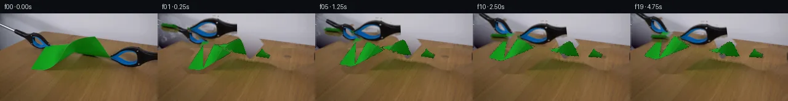

![首帧]()

Round 00
2026-11-05T23:39:30.693329+00:00像素候选变化代码 +408/−0inspection 更新
pixels 24ae4510c9245955 · code ec18187c674ad788
查看本轮 generate.py 真实 diff
--- previous/generate.py
+++ current/generate.py
@@ -0,0 +1,408 @@
+"""
+PixelWorld-Text case_0045: two blue-black grabbers pull a green paper scrap
+from opposite corners; the paper tears in two along a propagating crack.
+
+Pure local pixel operations (numpy / scipy / opencv / PIL):
+ frame 00 = byte-exact copy of first_frame.png
+ frames 01..19 = composites built from frame-0 sprites:
+ cleaned static table/backdrop -> per-piece soft shadows
+ -> warped paper pieces (real frame-0 green pixels) -> stretching
+ connector + fibers at the crack -> rigidly transformed grabber sprites
+(real frame-0 blue/black pixels, including their hard cast shadows).
+"""
+from pathlib import Path
+import numpy as np
+from PIL import Image, ImageDraw
+import cv2
+from scipy import ndimage
+
+CASE = Path(__file__).parent
+rng = np.random.default_rng(4501)
+
+# ---------------------------------------------------------------- load
+orig = np.array(Image.open(CASE / 'first_frame.png').convert('RGB'))
+H, W = orig.shape[:2]
+R = orig[:, :, 0].astype(int); G = orig[:, :, 1].astype(int); B = orig[:, :, 2].astype(int)
+
+green = (G > R + 15) & (G > B + 10)
+blue = (B > R + 15) & (B > G + 5)
+dark = (R < 60) & (G < 60) & (B < 70)
+toolish = (blue | dark) & ~green
+
+# connected tool parts (dilated to merge fingers/shanks)
+lbl, n = ndimage.label(ndimage.binary_dilation(toolish, iterations=2))
+parts = []
+for i in range(1, n + 1):
+ ys, xs = np.where(lbl == i)
+ if len(xs) < 20:
+ continue
+ parts.append((len(xs), xs.min(), xs.max(), ys.min(), ys.max(), i))
+left_lbl = [p for p in parts if p[3] < 70 and p[1] < 130]
+right_lbl = [p for p in parts if p[1] >= 130]
+left_mask = np.isin(lbl, [p[5] for p in left_lbl])
+right_mask = np.isin(lbl, [p[5] for p in right_lbl])
+# real (un-dilated) tool pixels
+left_px = left_mask & toolish
+right_px = right_mask & toolish
+
+# ---------------------------------------------------------------- table edge curve
+warm = (R > 80) & (R < 175) & (G > 50) & (G < 140) & (B < 100) & (R > B + 25)
+topmost = np.full(W, np.nan)
+for x in range(W):
+ ys = np.where(warm[:, x])[0]
+ if len(ys):
+ topmost[x] = ys[0]
+# anomaly columns (tool shadow blob x56-63, paper/right jaw x150-176) -> interpolate
+bad = np.zeros(W, bool)
+bad[54:66] = True
+bad[148:178] = True
+xx = np.arange(W)
+good = ~bad & ~np.isnan(topmost)
+edge_col = np.interp(xx, xx[good], topmost[good])
+edge_col = ndimage.gaussian_filter1d(edge_col, 5.0)
+
+def edge_y(x):
+ return np.interp(x, xx, edge_col)
+
+# ---------------------------------------------------------------- background model
+# clean table: columns y>=100 everywhere; also any warm pixel not in removal zone
+removal = (ndimage.binary_dilation(green, iterations=9)
+ | ndimage.binary_dilation(left_px, iterations=7)
+ | ndimage.binary_dilation(right_px, iterations=7))
+
+# column baseline colour (median of clean bottom rows)
+bottom = orig[100:143].astype(float)
+col_base = np.median(bottom, axis=0) # (W,3)
+col_base_s = ndimage.gaussian_filter1d(col_base, 1.0, axis=0)
+
+# edge "bounce" term: how much table colour lifts near the back edge
+dist = np.clip(np.arange(H)[:, None] - edge_col[None, :] + 0.5, 0, 60).astype(int)
+bounce = np.zeros((61, 3))
+clean_table = warm & ~removal
+for d in range(61):
+ m = clean_table & (dist == d)
+ if m.sum() >= 12:
+ bounce[d] = np.median(orig[m].astype(float) - col_base_s[np.where(m)[1]], axis=0)
+ else:
+ bounce[d] = bounce[d - 1] if d else 0
… diff truncated; 321 more lines …